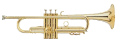

|
Help Files

Help
Files 2017 (Spring)
Soprano
1st Soprano
2nd Soprano Alto 1st Alto 2nd Alto
Bass 1st Bass 2nd Bass
Cyberbass website for the Requiem
Practice Sessions 2015 - 2016 (Winter)
Below our up-dated schedule. All rehearsals are at Southminster United
unless otherwise noted. • Monday, March 28 7:00 – 9:30 PM St Thomas the Apostle Church • Saturday April 2 10:00 a.m. – noon St Thomas the Apostle Church •
Monday April 4 7:00 - 9:30 PM • Monday April 11 7:00 - 9:30 PM • Monday April 18 7:00 - 9:30 PM St. Thomas the Apostle Church • Saturday,
April 23 - Dress rehearsal: at St. Thomas from 1:30 p.m.*** Anyone who can come a bit early for
rehearsals at St Thomas to help arrange furniture in order to make the most of our rehearsal
time would be much appreciated. • Sunday, April 24 - Concert: Warm-up & rehearsal at
1:30 p.m.; Performance begins @ 3:00 p.m. in St. Thomas Church. •
Monday April 25 - Annual General Meeting: at 6:30 PM*** Southminster United *** Change!
Monday April 18 Entire programma
Practice sessions 2015 - 2016 (Winter)
Proposed Southminster rehearsal dates for the next session: January 11,
18, 25 February 1, 8, 15, 22, 29 March 7, 14, 21, 28 (Easter Monday) April 4, 11 April 2 at St. Thomas if needed April 18 and
23 at St. Thomas. April 24 - Concert.
(Information subject to change)
Practice sessions 2015 - 2016 (Fall)
In The Bleak Midwinter:
See Amid the Winter's Snow
Ihr Lieben Hirten:
******************* L'Adieu des bergers (Hector Berlioz)
Soprano part:
Alto part (I've sent this to the Altos)
1st Tenor part:
2nd Tenor part:
1st Bass part:
2nd Bass part:
Hector Berlioz - L'Enfance du Christ (video)...
G.F.Handel - Glory to God...
While shepherds watched their flocks by night (video)...
Shepflok-alto-mid
Shepflok-soprano-mid
Shepflok-bass-mid
Shepflok-all-mid
Shepflok-all-tenor-mid
Shepflok-all-soprano-mid
Shepflok-all-bass-mid
Shepflok-all-alto-mid
Der Engel sprach zu den Hirten, (Heinrich Schütz) (YouTube)...
Der Engel sprach zu den Hirten, tutti...
Der Engel sprach zu den Hirten, sopran 1...
Der Engel sprach zu den Hirten, sopran 2...
Der Engel sprach zu den Hirten, tenor 1...
Der Engel sprach zu den Hirten, tenor 2...
Der Engel sprach zu den Hirten, tenor 3...
Der Engel sprach zu den Hirten, bass 1...
Der Engel sprach zu den Hirten, bass 2...
Shepherds in the field abiding (409)
D'où viens-tu, bergère?
Choral Tech Library...
Practice sessions 2014- 2015
Ottawa Brahms Choir Springtime
Melodies April 19 2015 Spring is Here, Claude
LeJeune – Revecy venir du Printans 2’15” (2) Volkslieder
– Der Mai ist gekommen 2’00” (19) Thomas Morley – Now is the month of Maying 2’00” (16) Birds
are Singing, Felix Mendelssohn Bartholdy –
Die Nachtigall 2’20”
(6) Jacques Arcadelt – Il Bianco e Dolce Cigno 3’00” (1) Crickets are Chirping, Josquin des Prez – El
Grillo 1’30” (4) Shepherds are out with their Flocks, John
Farmer – Fair Phyllis 1’30” (15) The
Flowers are Blooming, Morten Lauridsen
– Chansons des Roses (excerpts) 10’00” (12) (2) “Contre qui, rose” (4) “La rose complete” (5) “Dirait-on” Entr’acte (instrumental) And Love is in the Air Healey
Willan – Rise Up, My Love, My Fair One 2’00” (5) John Dowland
– Awake, Sweet Love 2’00” (17) Hans Leo Hassler –
Tanzen und Springen 1’20” (18) Johannes Brahms – Liebeslieder Waltzer (Op. 52) 27’00” (8)
(Note: go down for the actual help files) __________________________________________________
Monday april 13 Entire programme (St.
Thomas) _______________________________________________________________
Monday april 6
Entire programme
1 Il
bianco e dolce cigno - MIDI *
2 Claude
le Jeune Revecy venir du printemps: MIDI *
Ensemble Gilles Binchois (slow)
5 Rise Up, My Love, My Fair One - Innismara Vocal Ensemble, Newfoundland
6 Die
Nachtigall - Seraphim, Montreal
(Thanks Linda Russell)
Click here to download Springtime Melodies Rehearsal Plan
Click here to download springtime melodies programme-rev.pdf
Click here to download springtime-melodies-programme-rev2.pdf
Click here to download translation Brahms Liebeslieder
Click here to download letter German Embassador Ge
Click here to download letter German Embassador Eng PDF
Practice - Schedule Monday, November 17, 2014 7:00 - 9:30 PM - Southminster! Bach – Wachet Auf Brahms – O Heiland Reiß Schütz –
Meine Seele Tavener – The Lamb Matthews
– Dans les ombres Gibbons – Record of John Palestrina – Alma Redemptoris Carol –
Es ist ein Ros Saturday November 22 2:00
– 4:00 pm St. Thomas the Apostle Church 2345 Alta Vista Drive
All Monday November 24 7:00 - 10:00 PM St. Thomas the Apostle Church All Dress rehearsal: Saturday, November 29 at St. Thomas 10:00 to 2:00 All Christmas/Advent concert: Sunday, November 30 Warm-up & rehearsal at 1:30 p.m.; Performance begins @ 3:00 p.m.
in St. Thomas Church. All
Click here to download Brahms Choir recruitment form 1 in PDF format.
Click here to download Advent-ure Rehearsal Plan in PDF format.
Click here to download Lyrics & Translation file PDF
Help
files - Christmas 2014
Here is the schedule of regular and extra
rehearsals for the rest of the winter/spring season. The rehearsals will be at Southminster United unless otherwise indicated. Monday, Feb 10 7:00 - 9:30 PM Monday,
Feb 17 7:00 - 9:30 PM Monday, Feb 24 7:00
- 9:30 PM Monday March 3 7:00 -
9:30 PM Monday March 10 7:00 - 9:30
PM Monday March 17 7:00 - 9:30 PM Monday March 24 7:00 - 9:30 PM Monday March 31 7:00 - 9:30 PM Monday April 7 7:00 - 9:30 PM Monday
April 14 7:00 - 9:30 PM St. Thomas the Apostle Church 2345 Alta Vista Dr. Monday April 21 7:00 – 10:00 PM St. Thomas the Apostle Church
2345 Alta Vista Dr. Dress rehearsal: Saturday,
April 26 at St. Thomas 10:00 to 2:00 Concert: Sunday, April 27 Warm-up & rehearsal at 1:30 p.m.; Performance begins @ 3:00
p.m. in St. Thomas Church.

Ludmila Vernerova, soprano. Richard Sporka, tenor. Roman Janal,
bass. Roman Janal, bass. Virtuosi di Praga, Prague Chamber Orchestra. Conductor, Romano Gandolfi.
Franz Schubert - Mass
No. 2 in G major, D 167
I.
Kyrie
II. Gloria
III. Credo
IV. Sanctus
V. Benedictus
VI. Agnus Dei
Season 2013- 2014
Help files - Christmas
2013
Last regular rehearsal, dress rehearsal and concert will be at St
Thomas the Apostle 2345 Alta Vista Drive. Monday, October 28 7:00 - 9:30
PM
Saturday, November 2 10:00 AM - 1:00 PM at St Thomas the Apostle Church Monday November 4
7:00 - 9:30 PM
Monday November 11 7:00 - 9:30 PM
Monday November 18 7:00 - 9:30 PM
Monday
November 25 7:00 - 10:00 PM at St. Thomas the Apostle Church Dress rehearsal:
Saturday, November 30 10:00 AM to 2:00 PM Christmas concert: Sunday, December 1 Warm-up & rehearsal at 1:30
p.m.;
Performance begins at 3:00 p.m.
Season 2012- 2013
Here are the projected rehearsal dates, winter 2012 - 2013:
Southminster
Jan. 7, 14, 21, 28
Feb. 4, 11, 18, 25 >>Extra Rehearsal Sat. Feb. 16th, at St. Thomas<< Mar. 4, 11, 18, 25
Apr. 1 (Easter Monday), 8, 22 (A.G.M.)
St. Thomas
Apr. 15, 20 (dress rehearsal), 21 (concert)
Here you find a number of music files,
such as MP3, MIDI or music scores.
Also, links to actual performances. These are provided to help you learn your part.
Enjoy!
Spring Concert, 2013
A big thank you to Gloria Jean Nagy who lend
us her voice for the Hungarian pronounciation! You find
the printed words on the inside of your musical score.
Thank you Sieglinde for the help with the German pronounciation.
Christmas, 2012
Audio
Carmina Burana rehearsal schedule 2012
If any of you would like additional practice, Harmonia and Brahms Choirs are now in reciprocal mode.
We
are welcome to attend their rehearsals at St. Thomas on Wednesday evenings, starting at 7:30 (2 hours straight through).
We are still starting at 7:00 pm on Mondays.
Saturday March 31: 1:30 pm workshop with Lisette Canton, director of the Bach Choir, at
St. Thomas (2345 Alta Vista)
Monday April
9: (Easter) Rehearsal for the Brahms choir at Southminster
Saturday
April 14: 1:30 pm joint rehearsal of all three choirs at St. Thomas
Monday April 16: Rehearsal at Southminster
Monday
April 23: NO rehearsal
Wednesday April 25: Mandatory joint rehearsal with Harmonia
at St. Thomas at 7:00
Saturday April 28: Dress rehearsal 2:30-5:30 pm (perhaps
later ending) at St. Thomas
Sunday April 29: Concert 3:00 pm
(be prepared to arrive at least an hour prior to performance)
Monday
April 30: Brahms Choir AGM and social at Southminster 7:00 pm
Season 2011- 2012

Christmas program 2011
(Thanks to Sieglinde for lending us her voice)
Season 2010 - 2011
|